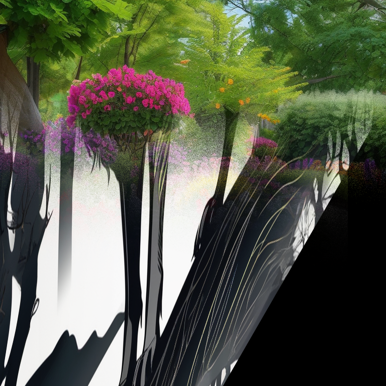

Colorful Canvas: AI Art Studio
Colorful Canvas is an AI-powered toolkit for creating stunning 3D visual illusions and effects
from ordinary 2D images. Using advanced depth estimation neural networks and custom image
processing techniques, the system transforms photos into immersive 3D experiences.
Visual Effects Gallery

Shadow Box Effect
Creates a realistic glass display case illusion with depth-based 3D enhancement
Screen Pop Effect
Makes objects appear to pop out of the screen with chromatic aberration effects
How It Works
- Depth Estimation: A state-of-the-art neural network analyzes the input image to create a detailed depth map.
- 3D Enhancement: The system applies transformations based on the depth map to create a 3D illusion.
- Effect Application: Specialized effects like shadow box frames or screen pop distortions are applied.
- Post-processing: Final touches like lighting, reflections, and shadows enhance the realism.
Try It Yourself
To use Colorful Canvas, you'll need Python with the required dependencies. Here's a simple example:
# Create a shadow box effect
python src/colorful_canvas.py --effect shadow_box --input_image examples/original.jpg
# Create a screen pop effect
python src/colorful_canvas.py --effect screen_pop --input_image examples/original.jpg --depth_factor 2.0
Key Features
Shadow Box Effect
Creates realistic display case illusions with depth-based 3D enhancement
Screen Pop Effect
Makes objects appear to come out of the screen with chromatic aberration
Neural Depth Mapping
Uses state-of-the-art neural networks for accurate depth estimation
Realistic Lighting
Simulates light sources, reflections, and shadows for enhanced realism
View on GitHub